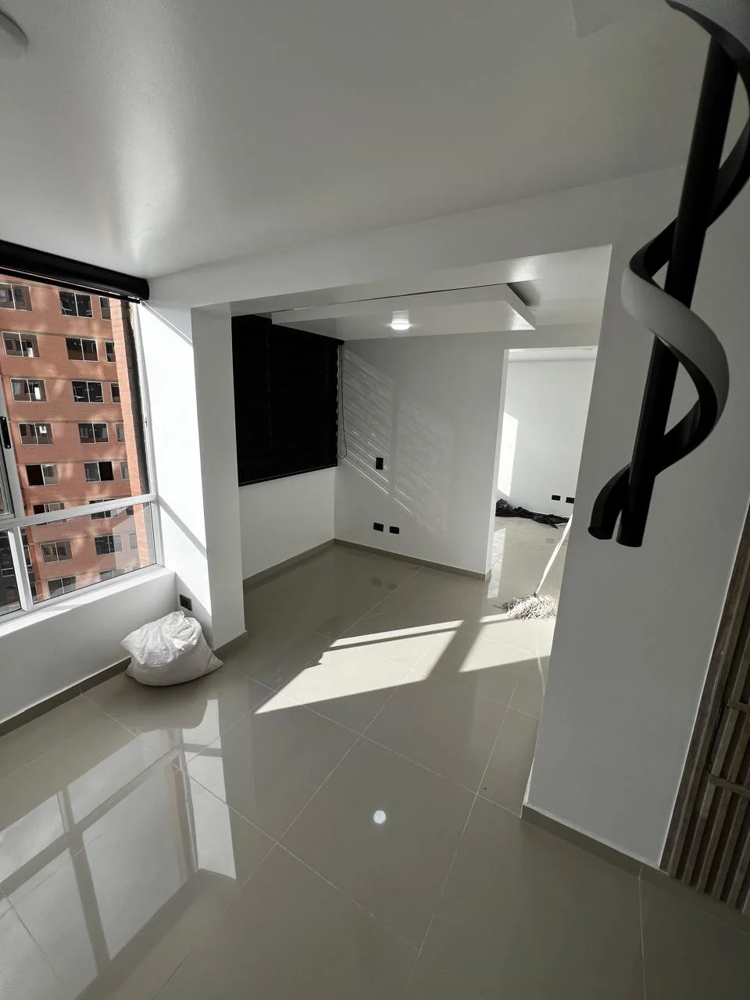
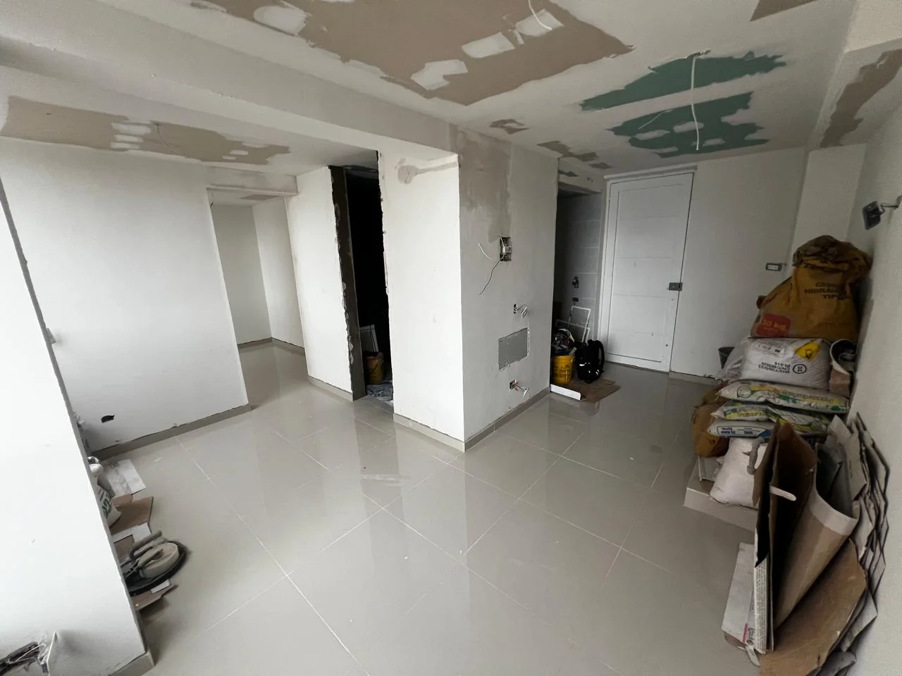
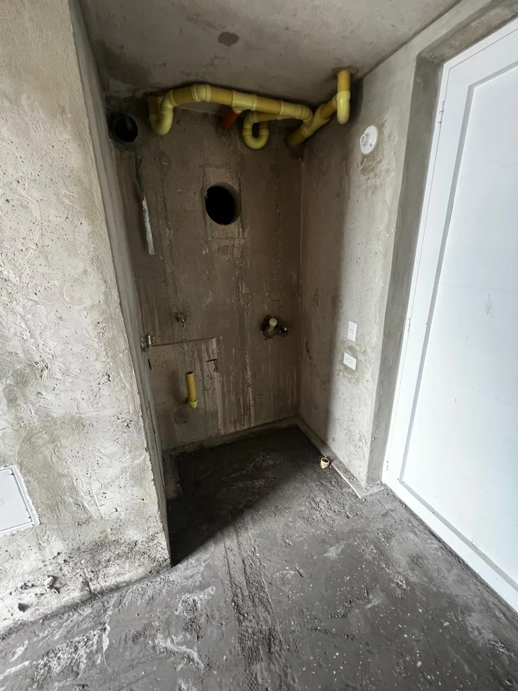
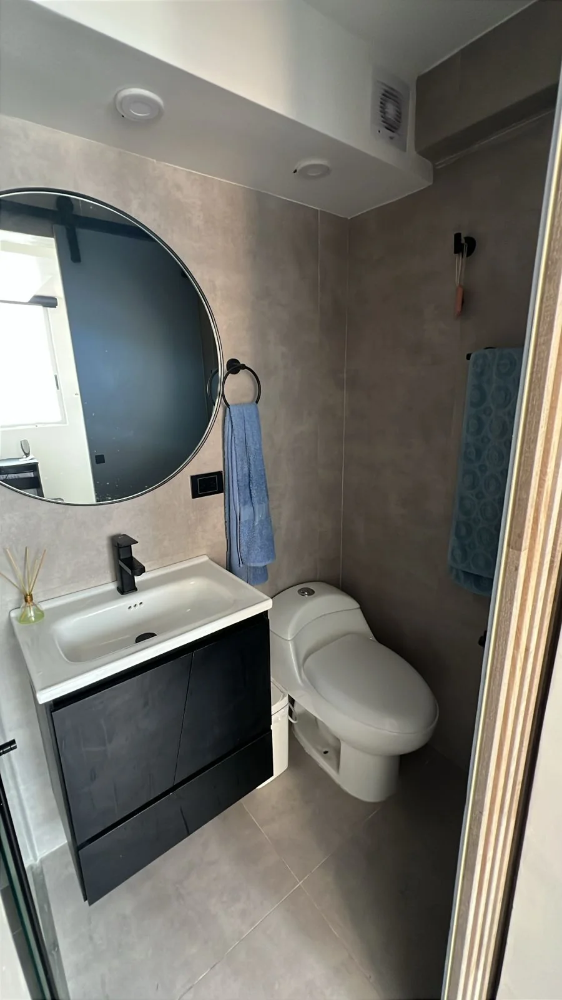
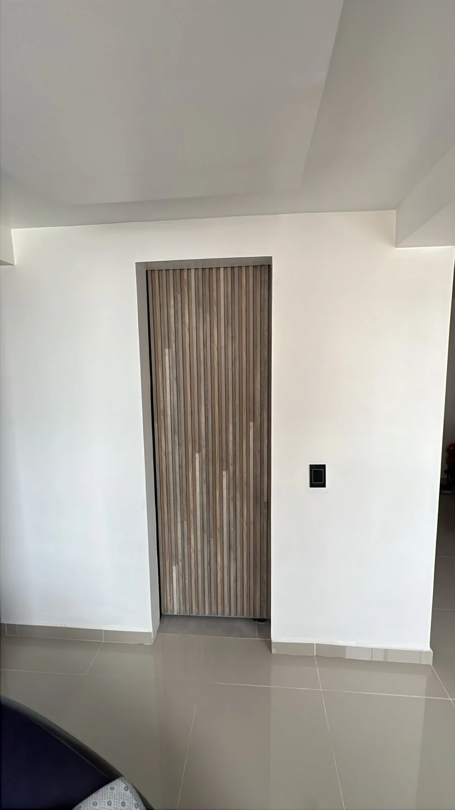
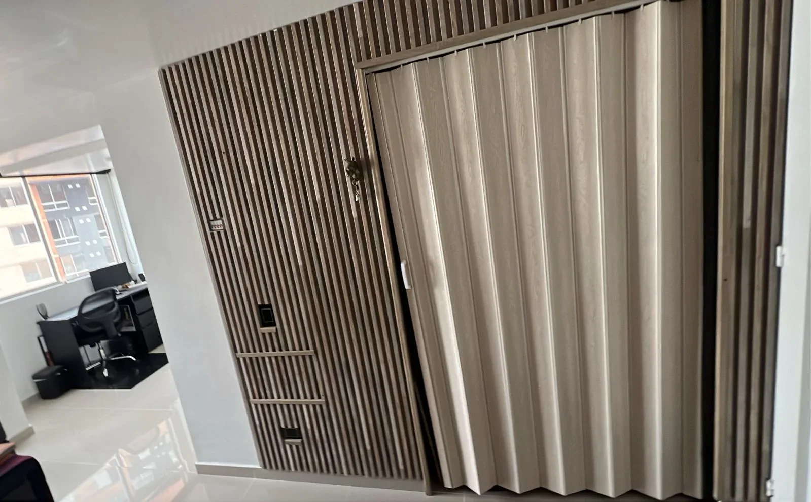

Interior

Proyecto residencial
Remodelación interior documentada con fotografías reales de antes, proceso y resultado.
Lectura del caso



Baño
El registro permite mostrar la transformación del baño como parte de la remodelación interior.


Resultado
Las fotografías grandes muestran el resultado como evidencia del trabajo ejecutado.



Transformación residencial
La remodelación integra acabados claros, cielo raso, puntos de luz y una lectura más ordenada del apartamento.
Cotización
Envía fotos del estado actual y cuéntanos qué tipo de remodelación necesitas.
SANBU revisa tu necesidad y orienta el alcance inicial.